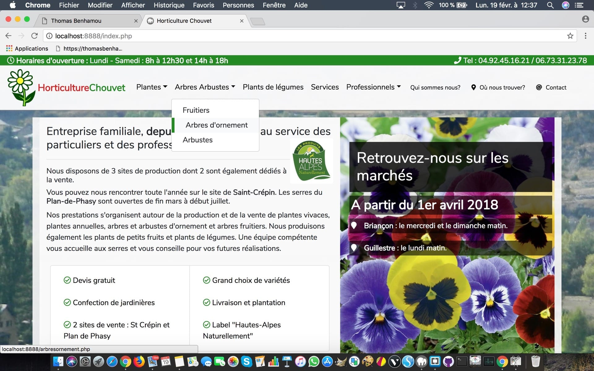

Projects and experiments I worked on so far
Creating a website for a small company
Used Bootstrap to avoid the coding of JS animations, and to benefit from their grid system
Creating from scratch a simple navbar
A nice way to learn how to use flexbox, and CSS pseudo elements to show dropdowns
A game of colors made with Javascript (vanilla and jQuery)
Another nice way of learning how to manipulate the DOM and CSS properties with JS
CSS experimentations
Learing about animations, transitions, pseudo-elements, and how to use them to create great UX
Far from being able to produce something worth re-using, still learning